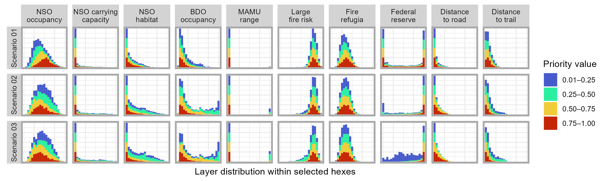

Home
>
Physiographic Provinces
>
California Klamath
>
Version: NSO threat
>
Batch 3: Adjust federal reserve incentive
Spatial Prioritization Results
📋 Scenario Table
🗺 Interactive Map
📋 Summary Table
📊 Histogram Plot
